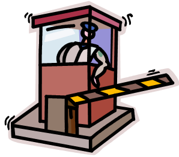

Introduction to Git Workflows
This content is geared towards the GitHub offerings with Git, but the general practices of workflows with Git can be applied to using GitLab, Stash or any other code hosting repository. I'm simply more familiar with GitHub so presenting examples based on that.
The long form of what you're about to cover here from Atlassian.
There are multiple work flows that users can adopt when using Git. We'll look at two here - Fork + Pull Request and Git Flow.
Benefits of Git Workflows
- Quick branching
- Stashing Working in Progress (WIP)
- Code Review is built-in to the workflows
Fork + Pull Request Workflow
This is GitHub's baby, we'll go to their Pull Request documentation to explain it.

The gist of Fork + Pull Request is the code repo will have a "Gate Keeper" approving merges. You can have multiple approvers. This *should* ensure you've had a code review. If you blindly accept all Pull Requests then the code review part is out the door.
You can receive patches from external entities. This is how just about every Open Source project on GitHub works.
On Gitlab these are called "Merge Requests". Same stuff, different name. So let's try to not get hung up on semantics.
Git Flow
Git Flow is predicated on the idea that the trunk/master/HEAD branch is always live. Any check-in to the master branch is reviewed, tested and ready to go live.
So - where does all the work happen? In feature branches, which are integrated in to the develop branch. The release branch is cut from develop, verified and then merged to master for every release.
Documented over at nvie.com - as well as with a Git Flow screencast.
SourceTree has push button Git Flow support.

Workout
We are going to complete the following actions
- Fork this repo on GitHub
- Send a Pull/Merge Request with your name added to the Attendee list of the README for this code depot. Hint: you can do this entirely in the browser
- With SourceTree, use Git Flow to create a Release of your own repo, or fork this repo and create a Release.
- Install Git Flow on the command line, create a feature and then release it